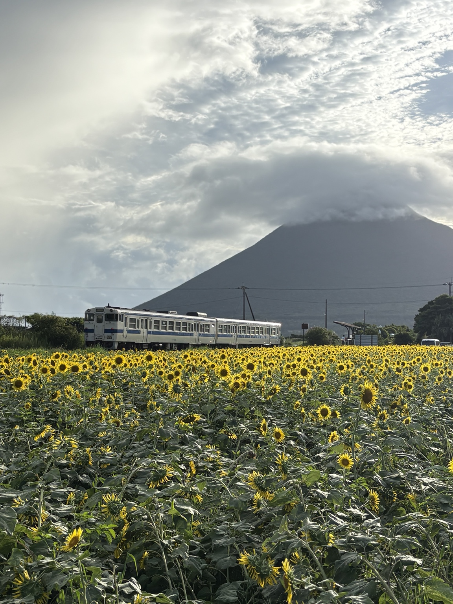

夏の緑の中を走る
深い緑に包まれた小さなトンネル。その暗がりから、白と青の気動車が姿を見せます。
IBUSUKI RAILWAY PHOTO WALK
指宿枕崎線と、薩摩半島の鉄道風景
開聞岳、海、田園、緑に包まれた小さな駅。指宿枕崎線で出会った、列車と一緒に残しておきたい風景を少しずつ紹介します。
PHOTO SPOT 01
深い緑に包まれた小さなトンネル。その暗がりから、白と青の気動車が姿を見せます。

小さなホームと待合所、その先に見えるトンネル。南薩のローカル線らしい静かな時間が流れています。
PHOTO SPOT 02

一面に咲くヒマワリの向こうを、指宿枕崎線の列車が走る。雲をまとった開聞岳を背にした、薩摩半島の夏の鉄道風景です。
開聞岳と列車
南薩の鉄道風景
駅舎とホームを訪ねる